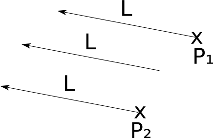
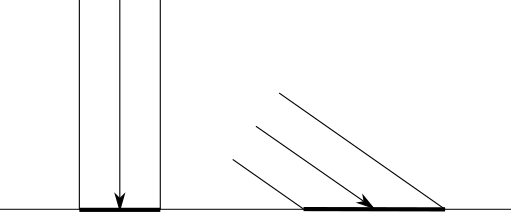
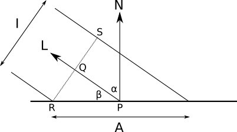
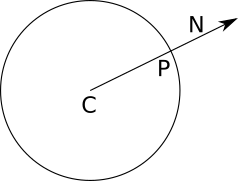
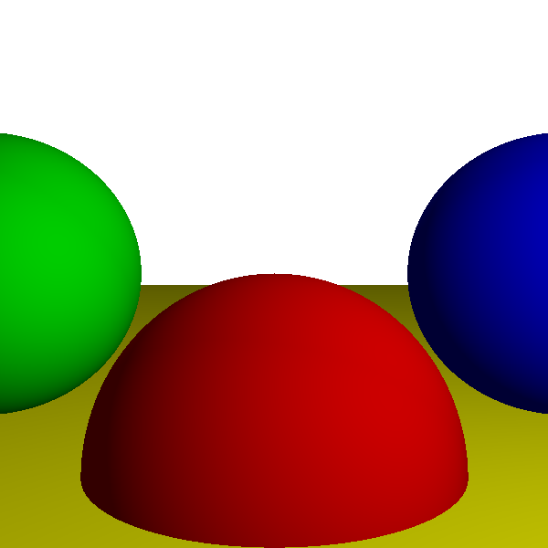
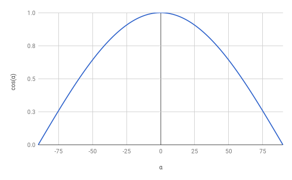
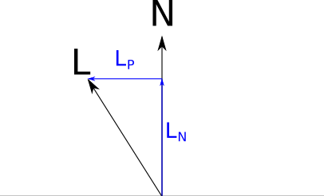

Light
We’ll start adding “realism” to our rendering of the scene by introducing light. Light is a vast and complex topic, so we’ll present a simplified model that is good enough for our purposes. This model is, for the most part, inspired by how light works in the real world, but it also takes some liberties with the aim of making the rendered scenes look good.
We’ll start with some simplifying assumptions that will make our lives easier, then we’ll introduce three types of light sources: point lights, directional lights, and ambient light. We’ll end the chapter by discussing how these lights affect the appearance of surfaces, including diffuse and specular reflection.
Simplifying Assumptions
Let’s make a few assumptions to make things simpler. First, we declare that all light is white. This lets us characterize any light using a single real number, \(i\), called the intensity of the light. Simulating colored lights isn’t that complicated (we’d just use three intensity values, one per color channel, and compute all color and lighting channel-wise), but we’ll stick to white lights to keep things simple.
Second, we’ll ignore the atmosphere. In real life, lights look dimmer the farther away they are; this is because of particles floating in the air that absorb part of the light as it travels through them. While this isn’t particularly complicated to do in a raytracer, we’ll keep it simple and ignore this effect; in our scene, distance doesn’t make lights any less bright.
Light Sources
Light has to come from somewhere. In this section, we’ll define three different types of light sources.
Point Lights
Point lights emit light from a fixed point in 3D space, called their position. They emit light equally in every direction; this is why they are also called omnidirectional lights. A point light is therefore fully described by its position and its intensity.
A light bulb is a good real-life approximation of a point light. While a real-life light bulb doesn’t emit light from a single point, and it isn’t perfectly omnidirectional, it’s a pretty accurate approximation.
Let’s define the vector \(\vec{L}\) as the direction from a point in the scene, \(P\), to the light, \(Q\). We can calculate this vector, called the light vector, as \(Q - P\). Note that since \(Q\) is fixed but \(P\) can be any point in the scene, \(\vec{L}\) is different for every point in the scene, as you can see in Figure 3-1.

Directional Lights
If a point light is a good approximation of a light bulb, does it also work as an approximation of the Sun?
This is a tricky question, and the answer depends on what we are trying to render. At the solar-system scale, the Sun can be approximated as a point light. After all, it emits light from a point, and it emits in all directions, so it seems to qualify.
However, if our scene represents something happening on Earth, it’s not such a good approximation. The Sun is so far away that every ray of light that reaches us has almost exactly the same direction. We could approximate this with a point light located very, very, very far away from the objects in the scene. However, the distance between the light and the objects would be orders of magnitude greater than the distance between objects, so we’d start running into numerical accuracy errors.
To better handle these situations, we define directional lights. Like point lights, directional lights have an intensity, but unlike them, they don’t have a position; instead, they have a fixed direction. You can think of them as infinitely distant point lights located in the specified direction.
While in the case of point lights we need to compute a different light vector \(\vec{L}\) for every point \(P\) in the scene, in this case \(\vec{L}\) is given. In the Sun-to-Earth scene example, \(\vec{L}\) would be (center of Sun) – (center of Earth). Figure 3-2 shows what this looks like.

As we can see here, the light vector of a directional light is the same for every point in the scene. Compare this with Figure 3-1, where the light vector of a point light is different for every point in the scene.
Ambient Light
Can every real-life light be modeled as a point or directional light? Pretty much. Are these two types of light enough to light a scene? Unfortunately not.
Consider what happens to the Moon. The only significant light source nearby is the Sun. So the “front half” of the Moon with respect to the Sun gets all its light, and its “back half” is in complete darkness. We see this from different angles from Earth, creating what we call the “phases” of the Moon.
However, the situation down here on Earth is a bit different. Even points that don’t receive light directly from a light source aren’t completely in the dark (just look at the floor under your chair). How do rays of light reach these points if their “view” of the light sources is obstructed by something else?
As mentioned in “Color Models” in Chapter 1 (Introductory Concepts), when light hits an object, part of it is absorbed, but the rest is scattered back into the scene. This means that light can come not only from light sources, but also from objects that get light from light sources and scatter part of it back into the scene. But why stop there? The scattered light will in turn hit some other object, part of it will be absorbed, and part of it will be scattered back into the scene. And so on, until all of the energy of the original light has been absorbed by the surfaces in the scene.
This means we should treat every object as a light source. As you can imagine, this would add a lot of complexity to our model, so we won’t explore that mechanism in this book. If you’re curious, search for global illumination and marvel at the pretty pictures.
But we still don’t want every object to be either directly illuminated or completely dark (unless we’re actually rendering a model of the solar system). To overcome this limitation, we’ll define a third type of light source, called ambient light, which is characterized only by its intensity. We’ll declare that an ambient light contributes some light to every point in the scene, regardless of where it is. It’s a gross oversimplification of the very complex interaction between the light sources and the surfaces in the scene, but it works well enough.
In general, a scene will have a single ambient light (because ambient lights only have an intensity value, any number of them can be trivially combined into a single ambient light) and an arbitrary number of point and directional lights.
Illumination of a Single Point
Now that we know how to define the lights in a scene, we need to figure out how the lights interact with the surfaces of the objects in the scene.
In order to compute the illumination of a single point, we’ll compute the amount of light contributed by each light source and add them together to get a single number representing the total amount of light the point receives. We can then multiply the color of the surface at that point by this amount to get the shade of color that represents how much light it receives.
So, what happens when a ray of light, be it from a directional light or a point light, hits a point on some object in our scene?
We can intuitively classify objects into two broad classes, depending on how they reflect light: “matte” and “shiny” objects. Since most objects around us can be classified as matte, we’ll focus on this group first.
Diffuse Reflection
When a ray of light hits a matte object, the ray is scattered back into the scene equally in every direction, a process called diffuse reflection; this is what makes matte objects look matte.
To verify this, look at some matte object around you, such as a wall. If you move with respect to the wall, its color doesn’t change. That is, the light you see reflected from the object is the same no matter where you’re looking from.
On the other hand, the amount of light reflected does depend on the angle between the ray of light and the surface. Intuitively, this happens because the energy carried by the ray has to spread over a smaller or bigger area depending on the angle, so the energy reflected to the scene per unit of area is higher or lower, respectively, as shown in Figure 3-3.

In Figure 3-3, we can see two rays of light of the same intensity (represented by having the same width) hitting a surface head-on and at an angle. The energy carried by the rays of light spreads uniformly across the areas they hit. The energy of the ray on the right spreads across a bigger area than that of the ray on the left, and therefore each point in its area receives less energy than in the left-hand case.
To explore this mathematically, let’s characterize the orientation of a surface by its normal vector. The normal vector of a surface at point \(P\), or simply “the normal,” is a vector perpendicular to the surface at \(P\). It’s also a unit vector, meaning its length is \(1\). We’ll call this vector \(\vec{N}\).
Modeling Diffuse Reflection
A ray of light with direction \(\vec{L}\) and intensity \(I\) hits a surface with normal \(\vec{N}\). What fraction of \(I\) is reflected back to the scene, as a function of \(I\), \(\vec{N}\), and \(\vec{L}\)?
As a geometric analogy, let’s represent the intensity of the light as the “width” of the ray. Its energy spreads over a surface of size \(A\). When \(\vec{N}\) and \(\vec{L}\) have the same direction—when the ray is perpendicular to the surface—then \(I = A\), which means the energy reflected per unit of area is the same as the incident energy per unit of area: \({I \over A} = 1\). On the other hand, as the angle between \(\vec{L}\) and \(\vec{N}\) approaches \(90^\circ\), \(A\) approaches \(\infty\), so the energy per unit of area approaches 0; \(\lim_{A \to \infty} {I \over A} = 0\). But what happens in between?
The situation is depicted in Figure 3-4. We know \(\vec{N}\), \(\vec{L}\), and \(P\) ; I have added the angles \(\alpha\) and \(\beta\), and the points \(Q\), \(R\), and \(S\) to make writing about the diagram easier.

Since a ray of light technically has no width, we can assume that everything happens in a flat, infinitesimally small patch of the surface. Even if it’s the surface of a sphere, the area we’re considering is so infinitesimally small that it’s almost flat in comparison with the size of the sphere, just like Earth looks flat at small scales.
The ray of light, with a width of \(I\), hits the surface at \(P\), at an angle \(\beta\). The normal at \(P\) is \(\vec{N}\), and the energy carried by the ray spreads over \(A\). We need to compute \({I \over A}\).
Consider \(RS\), the “width” of the ray. By definition, it’s perpendicular to \(\vec{L}\), which is also the direction of \(PQ\). Therefore, \(PQ\) and \(QR\) form a right angle, making \(PQR\) a right triangle.
One of the angles of \(PQR\) is \(90^\circ\), and another is \(\beta\). The remaining angle is therefore \(90^\circ - \beta\). But note that \(\vec{N}\) and \(PR\) also form a right angle, which means \(\alpha + \beta\) must also be \(90^\circ\). Therefore, \(\widehat{QRP} = \alpha\).
Let’s focus on the triangle \(PQR\) (Figure 3-5). Its angles are \(\alpha\), \(\beta\), and \(90^\circ\). The side \(QR\) measures \(I \over 2\), and the side \(PR\) measures \(A \over 2\).

And now, trigonometry to the rescue! By definition, \(cos(\alpha) = {QR \over PR}\); substituting \(QR\) with \(I \over 2\) and \(PR\) with \(A \over 2\), we get
\[cos(\alpha) = { {I \over 2} \over {A \over 2} }\]
which becomes
\[cos(\alpha) = {I \over A}\]
We’re almost there. \(\alpha\) is the angle between \(\vec{N}\) and \(\vec{L}\). We can use the properties of the dot product (feel free to consult the Linear Algebra appendix) to express \(cos(\alpha)\) as
\[cos(\alpha) = {{\langle \vec{N}, \vec{L} \rangle} \over {|\vec{N}||\vec{L}|}}\]
And finally
\[{I \over A} = {{\langle \vec{N}, \vec{L} \rangle} \over {|\vec{N}||\vec{L}|}}\]
We have arrived at a simple equation that gives us the fraction of light that is reflected as a function of the angle between the surface normal and the direction of the light.
Note that the value of \(cos(\alpha)\) becomes negative for angles over \(90^\circ\). If we blindly use this value, we can end up with a light source that makes a surface darker! This doesn’t make any physical sense; an angle over \(90^\circ\) just means the light is actually illuminating the back of the surface, and therefore it doesn’t contribute any light to the point we’re illuminating. So if \(cos(\alpha)\) becomes negative, we need to treat it as if it was \(0\).
The Diffuse Reflection Equation
We can now formulate an equation to compute the full amount of light received by a point \(P\) with normal \(\vec{N}\) in a scene with an ambient light of intensity \(I_A\) and \(n\) point or directional lights with intensity \(I_n\) and light vectors \(\vec{L_n}\) either known (for directional lights) or computed for \(P\) (for point lights):
\[I_P = I_A + \sum_{i = 1}^{n} I_i {{\langle \vec{N}, \vec{L_i} \rangle} \over {|\vec{N}||\vec{L_i}|}}\]
It’s worth repeating that the terms where \(\langle \vec{N}, \vec{L_i} \rangle < 0\) shouldn’t be added to the point’s illumination.
Sphere Normals
There’s only a small detail missing: where do the normals come from? The answer to this general question is far more complex than it might seem, as we’ll see in the second part of this book. Fortunately, at this point we’re only dealing with spheres, and there’s a very simple answer for them: the normal vector of any point of a sphere lies on a line that goes through the center of the sphere. As you can see in Figure 3-6, if the sphere center is \(C\), the direction of the normal at point \(P\) is \(P - C\).

Why “the direction of the normal” and not “the normal”? A normal vector needs to be perpendicular to the surface, but it also needs to have length \(1\). To normalize this vector and turn it into a true normal, we need to divide it by its own length, thus guaranteeing the result has length \(1\):
\[\vec{N} = {{P - C} \over {|P - C|}}\]
Rendering with Diffuse Reflection
Let’s translate all of this to pseudocode. First, let’s add a couple of lights to the scene:
light {
type = ambient
intensity = 0.2
}
light {
type = point
intensity = 0.6
position = (2, 1, 0)
}
light {
type = directional
intensity = 0.2
direction = (1, 4, 4)
}
Note that the intensities conveniently add up to \(1.0\); because of the way the lighting equation works, this ensures that no point can have a light intensity greater than this value. This means we won’t have any “overexposed” spots.
The lighting equation is fairly straightforward to translate to pseudocode (Listing 3-1).
ComputeLighting(P, N) {
i = 0.0
for light in scene.Lights {
if light.type == ambient {
❶i += light.intensity
} else {
if light.type == point {
❷L = light.position - P
} else {
❸L = light.direction
}
n_dot_l = dot(N, L)
❹if n_dot_l > 0 {
❺i += light.intensity * n_dot_l/(length(N) * length(L))
}
}
}
return i
}In Listing 3-1, we treat the three types of light in slightly different ways. Ambient lights are the simplest and are handled directly ❶. Point and directional lights share most of the code, in particular the intensity calculation ❺, but the direction vectors are computed in different ways (❷ and ❸), depending on their type. The condition in ❹ makes sure we don’t add negative values, which represent lights illuminating the back side of the surface, as we discussed before.
The only thing left to do is to use ComputeLighting in TraceRay. We replace the line that returns the color of the sphere:
return closest_sphere.color
with this snippet:
P = O + closest_t * D // Compute intersection N = P - closest_sphere.center // Compute sphere normal at intersection N = N / length(N) return closest_sphere.color * ComputeLighting(P, N)
Just for fun, let’s add a big yellow sphere:
sphere {
color = (255, 255, 0) # Yellow
center = (0, -5001, 0)
radius = 5000
}
We run the renderer and, lo and behold, the spheres now start to look like spheres (Figure 3-7)!

But wait, how did the big yellow sphere turn into a flat yellow floor? It hasn’t; it’s just so big compared to the other three spheres, and the camera is so close to it, that it looks flat—just like the surface of our planet looks flat when we’re standing on it.
Specular Reflection
Let’s turn our attention to shiny objects. Unlike matte objects, shiny objects look slightly different depending on where you’re looking from.
Imagine a billiard ball or a car just out of the car wash. These kinds of objects exhibit very specific light patterns, usually bright spots, that seem to move as you move around them. Unlike matte objects, the way you perceive the surface of these objects does actually depend on your point of view.
Note that a red billiard ball stays red if you walk around it, but the bright white spot that gives it its shiny appearance moves as you do. This shows that the new effect we want to model doesn’t replace diffuse reflection, but instead complements it.
To understand why this happens, let’s take a closer look at how surfaces reflect light. As we saw in the previous section, when a ray of light hits the surface of a matte object, it’s scattered back to the scene equally in every direction. This happens because the surface of the object is irregular, so at the microscopic level it behaves like a set of tiny surfaces pointing in random directions (Figure 3-8):

But what if the surface isn’t that irregular? Let’s go to the other extreme: a perfectly polished mirror. When a ray of light hits a mirror, it’s reflected in a single direction. If we call the direction of the reflected light \(\vec{R}\), and we keep the convention that \(\vec{L}\) points toward the light source, Figure 3-9 illustrates the situation.

Depending on how “polished” the surface is, it behaves more or less like a mirror; this is why it’s called specular reflection, from speculum, the Latin word for mirror.
For a perfectly polished mirror, the incident ray of light \(\vec{L}\) is reflected in a single direction, \(\vec{R}\). This is why you see reflected objects very clearly: for every incident ray of light \(\vec{L}\), there’s a single reflected ray \(\vec{R}\). But not every object is perfectly polished; while most of the light is reflected in the direction of \(\vec{R}\), some of it is reflected in directions close to \(\vec{R}\). The closer to \(\vec{R}\), the more light is reflected in that direction, as you can see in Figure 3-10. The “shininess” of the object is what determines how rapidly the reflected light decreases as you move away from \(\vec{R}\).

We want to figure out how much light from \(\vec{L}\) is reflected back in the direction of our point of view. If \(\vec{V}\) is the “view vector” pointing from \(P\) to the camera, and \(\alpha\) is the angle between \(\vec{R}\) and \(\vec{V}\), we get Figure 3-11.

For \(\alpha = 0^\circ\), all the light is reflected in the direction of \(\vec{V}\). For \(\alpha = 90^\circ\), no light is reflected. As with diffuse reflection, we need a mathematical expression to determine what happens for intermediate values of \(\alpha\).
Modeling Specular Reflection
At the beginning of this chapter, I mentioned that some models aren’t based on physical models. This is one of them. The following model is arbitrary, but it’s used because it’s easy to compute and it looks good.
Consider \(cos(\alpha)\). It has the nice properties that \(cos(0) = 1\) and \(cos(\pm 90) = 0\), just like we need; and the values become gradually smaller from \(0\) to \(90\) in a very pleasant curve (Figure 3-12).

This means \(cos(\alpha)\) matches all of our requirements for the specular reflection function, so why not use it?
There’s one more detail. If we used this formula straight away, every object would be equally shiny. How can we adapt the equation to represent varying degrees of shininess?
Remember that shininess is a measure of how quickly the reflection function decreases as \(\alpha\) increases. A simple way to obtain different shininess curves is to compute the power of \(cos(\alpha)\) to some positive exponent \(s\). Since \(0 \le cos(\alpha) \le 1\), we are guaranteed that \(0 \le cos(\alpha)^s \le 1\); so \(cos(\alpha)^s\) is just like \(cos(\alpha)\), only “narrower.” Figure 3-13 shows the graph for \(cos(\alpha)^s\) for different values of \(s\).

The bigger the value of \(s\), the “narrower” the function becomes around \(0\) and the shinier the object looks. \(s\) is called the specular exponent and it’s a property of the surface. Since the model is not based on physical reality, the values of \(s\) can only be determined by trial and error—essentially, tweaking the values until they look “right.” For a physically based model, you can look into bidirectional reflectance distribution functions (BRDFs).
Let’s put all of this together. A ray of light hits a surface with specular exponent \(s\) at point \(P\), where its normal is \(\vec{N}\), from direction \(\vec{L}\). How much light is reflected toward the viewing direction \(\vec{V}\)?
According to our model, this value is \(cos(\alpha)^s\), where \(\alpha\) is the angle between \(\vec{V}\) and \(\vec{R}\); \(\vec{R}\) is in turn \(\vec{L}\) reflected with respect to \(\vec{N}\). So the first step is to compute \(\vec{R}\) from \(\vec{N}\) and \(\vec{L}\).
We can decompose \(\vec{L}\) into two vectors, \(\vec{L_P}\) and \(\vec{L_N}\), such that \(\vec{L} = \vec{L_N} + \vec{L_P}\), where \(\vec{L_N}\) is parallel to \(\vec{N}\) and \(\vec{L_P}\) is perpendicular to \(\vec{N}\) (Figure 3-14).

\(\vec{L_N}\) is the projection of \(\vec{L}\) over \(\vec{N}\); by the properties of the dot product and the fact that \(|\vec{N}| = 1\), the length of this projection is \(\langle \vec{N}, \vec{L} \rangle\). We defined \(\vec{L_N}\) to be parallel to \(\vec{N}\), so \(\vec{L_N} = \vec{N} \langle \vec{N}, \vec{L} \rangle\).
Since \(\vec{L} = \vec{L_P} + \vec{L_N}\), we can immediately get \(\vec{L_P} = \vec{L} - \vec{L_N} = \vec{L} - \vec{N} \langle \vec{N}, \vec{L} \rangle\).
Now let’s look at \(\vec{R}\). Since it’s symmetrical to \(\vec{L}\) with respect to \(\vec{N}\), its component parallel to \(\vec{N}\) is the same as \(\vec{L}\)’s, and its perpendicular component is the opposite of \(\vec{L}\)’s; that is, \(\vec{R} = \vec{L_N} - \vec{L_P}\). You can see this in Figure 3-15.

Substituting with the expressions we found above, we get
\[\vec{R} = \vec{N} \langle \vec{N}, \vec{L} \rangle - \vec{L} + \vec{N} \langle \vec{N}, \vec{L} \rangle\]
and simplifying a bit
\[\vec{R} = 2\vec{N} \langle \vec{N}, \vec{L} \rangle - \vec{L}\]
The Specular Reflection Term
We’re now ready to write an equation for the specular reflection:
\[\vec{R} = 2\vec{N} \langle \vec{N}, \vec{L} \rangle - \vec{L}\]
\[I_S = I_L \left( {{\langle \vec{R}, \vec{V} \rangle} \over {|\vec{R}||\vec{V}|}} \right)^s\]
As with diffuse lighting, it’s possible that \(cos(\alpha)\) is negative, and we should ignore it for the same reason as before. Also, not every object has to be shiny; for matte objects, the specular term shouldn’t be computed at all. We’ll note this in the scene by setting their specular exponent to \(-1\) and handling them accordingly.
The Full Illumination Equation
We can add the specular reflection term to the illumination equation we’ve been developing and get a single expression that describes illumination at a point:
\[I_P = I_A + \sum_{i = 1}^{n} I_i \cdot \left[ {{{\langle \vec{N}, \vec{L_i} \rangle} \over {|\vec{N}||\vec{L_i}|}} + \left( {{\langle \vec{R_i}, \vec{V} \rangle} \over {|\vec{R_i}||\vec{V}|}} \right)^s} \right]\]
where \(I_P\) is the total illumination at point \(P\), \(I_A\) is the intensity of the ambient light, \(N\) is the normal of the surface at \(P\), \(V\) is the vector from \(P\) to the camera, \(s\) is the specular exponent of the surface, \(I_i\) is the intensity of light \(i\), \(L_i\) is the vector from P to light \(i\), and \(R_i\) is the reflection vector at \(P\) for light \(i\).
Rendering with Specular Reflections
Let’s add specular reflections to the scene we’ve been working with so far. First, some changes to the scene itself:
sphere {
center = (0, -1, 3)
radius = 1
color = (255, 0, 0) # Red
specular = 500 # Shiny
}
sphere {
center = (2, 0, 4)
radius = 1
color = (0, 0, 255) # Blue
specular = 500 # Shiny
}
sphere {
center = (-2, 0, 4)
radius = 1
color = (0, 255, 0) # Green
specular = 10 # Somewhat shiny
}
sphere {
center = (0, -5001, 0)
radius = 5000
color = (255, 255, 0) # Yellow
specular = 1000 # Very shiny
}
This is the same scene as before, with the addition of specular exponents to the sphere definitions.
At the code level, we need to change ComputeLighting to compute the specular term when necessary, and add it to the overall light. Note that the function now needs \(\vec{V}\) and \(s\), as you can see in Listing 3-2.
ComputeLighting(P, N, V, s) {
i = 0.0
for light in scene.Lights {
if light.type == ambient {
i += light.intensity
} else {
if light.type == point {
L = light.position - P
} else {
L = light.direction
}
// Diffuse
n_dot_l = dot(N, L)
if n_dot_l > 0 {
i += light.intensity * n_dot_l/(length(N) * length(L))
}
// Specular
❶ if s != -1 {
R = 2 * N * dot(N, L) - L
r_dot_v = dot(R, V)
❷ if r_dot_v > 0 {
i += light.intensity * pow(r_dot_v/(length(R) * length(V)), s)
}
}
}
}
return i
}ComputeLighting that supports both diffuse and specular reflectionsMost of the code remains unchanged, but we add a fragment to handle specular reflections. We make sure it applies only to shiny objects ❶ and also make sure we don’t add negative light intensity ❷, as we did for diffuse reflection.
Finally, we need to modify TraceRay to pass the new parameters to Compute Lighting. \(s\) is straightforward: it comes directly from the scene definition. But where does \(\vec{V}\) come from?
\(\vec{V}\) is a vector that points from the object to the camera. Fortunately, we already have a vector that points from the camera to the object at TraceRay—that’s \(\vec{D}\), the direction of the ray we’re tracing! So \(\vec{V}\) is simply \(-\vec{D}\).
Listing 3-3 gives the new TraceRay with specular reflection.
TraceRay(O, D, t_min, t_max) {
closest_t = inf
closest_sphere = NULL
for sphere in scene.Spheres {
t1, t2 = IntersectRaySphere(O, D, sphere)
if t1 in [t_min, t_max] and t1 < closest_t {
closest_t = t1
closest_sphere = sphere
}
if t2 in [t_min, t_max] and t2 < closest_t {
closest_t = t2
closest_sphere = sphere
}
}
if closest_sphere == NULL {
return BACKGROUND_COLOR
}
P = O + closest_t * D // Compute intersection
N = P - closest_sphere.center // Compute sphere normal at intersection
N = N / length(N)
❶ return closest_sphere.color * ComputeLighting(P, N, -D, closest_sphere.specular)
}TraceRay with specular reflectionThe color calculation ❶ is slightly more involved than it looks. Remember that colors must be multiplied channel-wise and the results must be clamped to the range of the channel (in our case, [0–255]). Although in the example scene the light intensities add up to 1.0, now that we’re adding the contributions of specular reflections, the values could go beyond that range.
You can see the reward for all this vector juggling in Figure 3-16.

Note that in Figure 3-16, the red sphere with a specular exponent of 500 has a more concentrated bright spot than the green sphere with a specular exponent of 10, exactly as expected. The blue sphere also has a specular exponent of 500 but no visible bright spot. This is only a consequence of how the image is cropped and how the lights are placed in the scene; indeed, the left half of the red sphere also doesn’t exhibit any specular reflection.
Summary
In this chapter, we’ve taken the very simple raytracer developed in the previous chapter and given it the ability to model lights and the way they interact with the objects in the scene.
We split lights into three types: point, directional, and ambient. We explored how each of them can represent a different type of light that you can find in real life, and how to describe them in our scene definition.
We then turned our attention to the surface of the objects in the scene, splitting them into two types: matte and shiny. We discussed how rays of light interact with them and developed two models—diffuse and specular reflection—to compute how much light they reflect toward the camera.
The end result is a much more realistic rendering of the scene: instead of seeing just the outlines of the objects, we now get a real sense of depth and volume and a feel for the materials the objects are made of.
However, we are missing a fundamental aspect of lights: shadows. This is the focus of the next chapter.